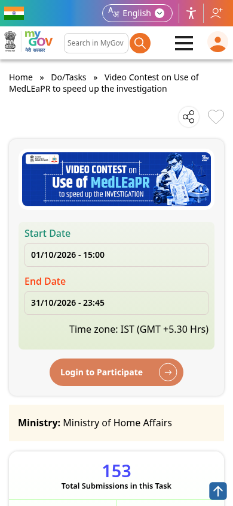
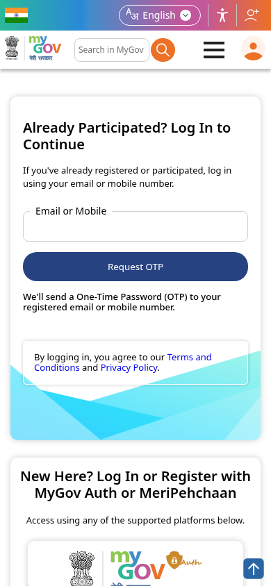

MedLEaPR video contest by BPR&D: win up to Rs 20,000, submit by 31 October
The Bureau of Police Research and Development (BPR&D), under the Ministry of Home Affairs, is running a video contest on MyGov about MedLEaPR and the new criminal laws. The best video wins Rs 20,000, with Rs 10,000 and Rs 5,000 for the next two. Entry is free and open to all Indian citizens. Entries close 31 October 2026, 11:45 PM.

Official publisher artwork hosted by its publisher. Official source. Independent guide, not affiliated or sponsored. Artwork and trademarks belong to their owners.
Prizes
- 1st: Rs 20,000
- 2nd: Rs 10,000
- 3rd: Rs 5,000
What to make
- A video of 2 to 5 minutes in MP4 format
- Language: Hindi, English or a regional language
- Upload it to YouTube or Google Drive (public access) and submit the link on the MyGov task page
- No provocative, objectionable or inappropriate content
- Winning videos will be shared with stakeholders of the criminal justice system
Rules to read
- Open to Indian citizens; no entry fee; register on MyGov to take part
- Keep your MyGov profile accurate - it is used for all communication
- Plagiarised, false or erroneous entries can be disqualified; proof of submission is not proof of receipt
- BPR&D can amend or cancel the contest; its decision is final; disputes fall under Delhi jurisdiction
- Prize money is disbursed by BPR&D, MHA
How to enter: step by step
Checked on the live MyGov pages on 19 October 2026.
- Make your video first: 2-5 minutes, MP4, on the topic in the contest description. Read all the Terms and Conditions (PDF linked on the contest page) before you start.
- Upload the video to YouTube or Google Drive with public viewing access and keep the link ready.
- Open the official task page: mygov.in/task/video-contest-use-medleapr-speed-investigation. The page shows the end date (31 October 2026, 11:45 PM IST) and a "Login to Participate" button.
- Tap Login to Participate. New to MyGov: register with MyGov Auth or with DigiLocker (MeriPehchaan single sign-on). Already registered: enter your email or mobile number and tap Request OTP, then enter the OTP sent to your email/mobile.
- Back on the task page, paste your video link and submit your entry as the page directs.
- Submit before 31 October 2026, 11:45 PM IST.


Steps 5-6 happen inside your own login, so they are not shown as screenshots.
Video guides
We searched YouTube on 19 October 2026 for a step-by-step entry video for this contest in English and in Malayalam. We could not verify one that covers this contest and the current MyGov portal, so we are not linking any rather than risk an unrelated video.
We read the contest page and all 17 terms and conditions on 17 October 2026. We did not submit an entry.
Sources: Video contest page on MyGov, Terms and conditions (PDF). Checked 17 October 2026; entry steps and video search re-checked 19 October 2026. This is an AiCoN explainer, not a government publication.